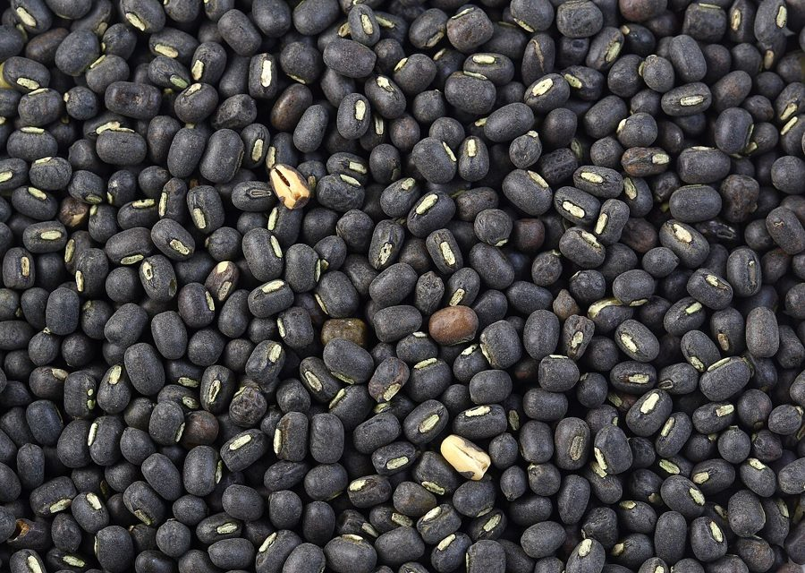

उड़दBlack Gram
Vigna mungo · Fabaceae · FLR-0270

- Scientific name वैज्ञानिक नाम
- Vigna mungo (L.) Hepper
- Family कुल
- Fabaceae
- Hindi हिंदी
- उड़द
- Local names स्थानीय नाम
- urad, urd, udad, black gram
- Status here यहाँ की स्थिति
- cultivated
- Movement आवागमन
- Resident, here all year
- Known from कहाँ दर्ज
- Others have published records from the Basti–Ayodhya districts बस्ती–अयोध्या के ज़िलों से दूसरों के प्रकाशित अभिलेख
- IUCN IUCN
- not evaluated
- Review समीक्षा
- audited and independently read
When to look कब देखें
Expected mainly in October, November, December, January, February, March. मुख्यतः अक्टूबर, नवंबर, दिसंबर, जनवरी, फ़रवरी, मार्च में अपेक्षित।
Uses and possibilities उपयोग और संभावनाएँ
Drawn from the documented uses in the profile below, where each is labelled traditional, current or a research lead. All uses →
Tell it apart from इनसे अलग पहचानें
उड़द / Black Gram
Vigna mungo (L.) Hepper — Fabaceae
उड़द — सर्दी की दाल, जिसके छोटे, काले, मनके-जैसे दाने दक्षिण भारतीय और उत्तर भारतीय खानों में प्रमुख हैं। इडली, डोसा, और उड़द की दाल का पारंपरिक महत्व बहुत है। यह दाल पौष्टिक, पाचन में आसान, और पेट के लिए हल्की मानी जाती है। बसंत में खेत सूखे पत्तों से हल्के होते हैं, पर मिट्टी में नाइट्रोजन बढ़ाती है।
Quick Identification त्वरित पहचान
| Feature | Description |
|---|---|
| Plant | Herbaceous, compact, bushy, 30–50 cm tall |
| Leaves | Trifoliolate (three leaflets), alternate, leaflets ovate, 3–5 cm |
| Flowers | Small, yellow, in short axillary racemes |
| Pods | Linear, 5–7 cm long, dark brown to black when mature, 4–6 seeds per pod |
| Seeds | Small, round, shiny black (gram-like), 5–6 mm |
Field tip: A low, bushy legume with three-leaflet leaves, small yellow flowers, and dark brown pods containing black gram-like seeds. Grown in rabi season throughout eastern UP. The mature plant is inconspicuous.
Morphology आकारिकी
Biometrics (typical measurements for Vigna mungo in northern India):
| Measurement | Range |
|---|---|
| Plant height | 30–50 cm |
| Leaflet length | 3–5 cm |
| Pod length | 5–7 cm |
| Seed diameter | 5–6 mm |
Stem: Herbaceous, branching, green, hairy. Plant form is compact and bushy.
Leaves: Alternate, trifoliolate; terminal leaflet on a longer petiolule than laterals. Leaflets ovate, 3–5 cm long, entire, hairy on both surfaces.
Flowers: Small, yellow, in axillary racemes of 3–5 flowers. Calyx five-lobed; corolla papilionaceous (pea-like).
Pods: Linear, 5–7 cm long, slightly curved, thick-walled, dark brown to black at maturity. Contains 4–6 seeds.
Seeds: Small, round, shiny, black or very dark brown, 5–6 mm diameter. Seed coat glossy.
हिंदी: झाड़ीदार पौधा, छोटी पत्तियाँ तीन की, पीले फूल, काली दालें।
Behaviour & Ecology व्यवहार और पारिस्थितिकी
Black gram is a cool-season pulse crop native to South Asia and domesticated for its edible seeds. The plant is a legume and forms symbiotic nitrogen-fixing associations with rhizobium bacteria in root nodules, enriching the soil with bioavailable nitrogen. This makes the crop valuable in crop rotations, as a subsequent crop benefits from improved soil fertility.
The crop is relatively hardy and tolerates moderate drought and poor soils, though it performs best with adequate moisture and fertile, well-drained soil. The plant is largely free of major pests and diseases in eastern UP.
हिंदी: दलहन है, जो जमीन में नाइट्रोजन बढ़ाती है। सूखा सह सकता है। कीटों से कम प्रभावित।
Life Cycle / Phenology जीवन चक्र
| Month / Season | Event |
|---|---|
| August–September | Field preparation; seed sourcing |
| September–October | Sowing; germination |
| October–November | Vegetative growth; nodule formation |
| November–December | Flowering begins; pod set |
| December–January | Pod maturation; drying |
| January–February | Pod maturity; harvesting |
From sowing to maturity: 90–120 days, depending on variety and conditions.
हिंदी: अक्टूबर में बीज, जनवरी-फरवरी में तोड़ाई।
Cultivation Calendar कृषि कैलेंडर
| Stage | Month(s) | Season |
|---|---|---|
| Field preparation and manuring | August–September | Pre-rabi |
| Seed sowing (line or broadcast) | September–October | Rabi onset |
| Thinning | October | Early rabi |
| Nodule formation and nitrogen fixation | October–November | Mid-rabi |
| Minimal irrigation (if needed) | October–December | Rabi |
| Pest and disease monitoring | October–February | Rabi |
| Pod drying in field | January | Peak rabi |
| Harvesting (dry pods) | January–February | Rabi end |
| Threshing and winnowing | February–March | Post-harvest |
Associated Species / Interactions संबंधित प्रजातियाँ
- Crop rotation: Follows Paddy; precedes Wheat or other rabi crops.
- Nitrogen fixation partners: Rhizobium bacteria in soil.
Pests and Diseases कीट और रोग
- Leaf spots: fungal; minor in eastern UP.
- Pod borers: occasionally; hand-picking effective.
- Root rot in waterlogged soils: prevent by good drainage.
- Generally hardy; major pests rare.
Agricultural / Human Relevance कृषि प्रासंगिकता
Food use:
Black gram is a staple pulse in Indian cuisine, particularly in South India (idli, dosa) and North India. The whole seeds are cooked as a dal (curry). The decorticated seed (with the black seed coat removed) is white inside and is often ground into flour for traditional preparations. The dal is considered highly nutritious and digestible, suitable for all ages.
Nutritional value:
Seeds are rich in protein, fibre, minerals (especially iron), and B vitamins. The dal is low in fat and provides carbohydrates.
Soil improvement:
The nitrogen-fixing capability improves soil fertility for subsequent crops. Traditional crop rotation includes black gram as a key crop for maintaining soil health.
Cultivation advantages:
Low external input requirement; seeds are relatively cheap; minimal pest pressure; profitable return to the farmer.
हिंदी: दक्षिण भारतीय खाना (इडली, डोसा) का मुख्य। दाल भी बनती है। पौष्टिक, हल्की। मिट्टी को ठीक करती है।
Expected Locally स्थानीय रूप से अपेक्षित
Not a field record. Written from published accounts for eastern Uttar Pradesh. No confirmed local sighting yet — if you have seen it, that is what the atlas needs.
अभी तक स्थानीय पुष्टि नहीं। यह विवरण प्रकाशित स्रोतों से है, किसी अवलोकन से नहीं।
Expected as a cultivated rabi pulse throughout Basti district, visible from October to February in fields and gardens. The mature plant is inconspicuous, but the pods are distinctive. Dry seeds are sold in all markets and bazaars.
Distribution वितरण
Global range: Domesticated in South Asia; cultivated in tropical and subtropical Asia.
In India: Widely cultivated in all regions; particularly important in the Indo-Gangetic plain and South India.
In Uttar Pradesh: Cultivated throughout; an important rabi pulse.
In Basti district / eastern UP: Common as a cultivated rabi pulse in gardens and fields.
Research Questions शोध प्रश्न
Anyone can investigate these | कोई भी इन प्रश्नों की जाँच कर सकता है
- How much do root nodules increase soil nitrogen compared to a non-legume crop? — Soil sampling trial comparing legume and non-legume plots.
- What is the local yield per hectare, and how does it vary by village and farmer practice? — Farm-level yield documentation.
- Can black gram seeds be saved locally without loss of germination? — Seed storage trial.
- Do local varieties differ in seed size, cooking time, or taste? — Farmer survey and cooking trials.
- What is the local market price for black gram, and is there a market for decorticated urad flour? — Bazaar survey.
Similar Species मिलती-जुलती प्रजातियाँ
| Species | How to tell apart | हिंदी |
|---|---|---|
| Cowpea (Vigna unguiculata) | Larger plant; light brown seeds with a white hilum (eye); different taste | बड़ा पौधा, भूरी दालें |
| Lentil (Lens culinaris) | Taller; flat, lens-shaped seeds; winter pulse but different family | चपटी दालें |
| mung bean (Vigna radiata) | Green seeds; different taste and uses; smaller plant | हरी दालें |
Field rule: A low, bushy legume with black gram-like seeds in dark brown pods is black gram.
Taxonomy & Classification वर्गीकरण
Original description. Described originally as Phaseolus mungo L. and later reclassified as Vigna mungo (L.) Hepper.
Subspecies. No subspecies currently recognised.
Family and order placement. Fabaceae, the legume/pea family, order Fabales. Genus Vigna comprises about 100 species, mostly Old World and African, many cultivated.
Phylogenetic notes. Vigna mungo is closely related to mung bean (Vigna radiata) and Cowpea (Vigna unguiculata), all in the same genus.
IUCN status rationale. Not evaluated. Widely cultivated; crop status.
Photo Gallery फोटो गैलरी
Photos needed आवश्यक फोटो
- [ ] Flowering plants in field (खिलते हुए पौधे)
- [ ] Mature pods ready for harvest (पके डाली)
- [ ] Dried seeds (सूखी दालें)
No photos yet — add field photos to media/species/black_gram/ and run node scripts/sync_photos.js.
References संदर्भ
- Linnaeus, C. (1753). Species Plantarum. Laurentii Salvii, Holmiae. [original as Phaseolus mungo]
- Indian Council of Agricultural Research (2021). Handbook of Agriculture. ICAR, New Delhi.
- Chadha, K.L. (2010). Handbook of Horticulture. ICAR, New Delhi.
- Botanical Survey of India. Flora of Uttar Pradesh. BSI, Kolkata.
- Singh, U. & Singh, B. (1992). Nutritional quality of pulses. Journal of Food Science and Technology 29(1): 24–32.
- GBIF Occurrence Data — Vigna mungo, India (2020–2026).
Source file: species/flora/crops/black_gram.md